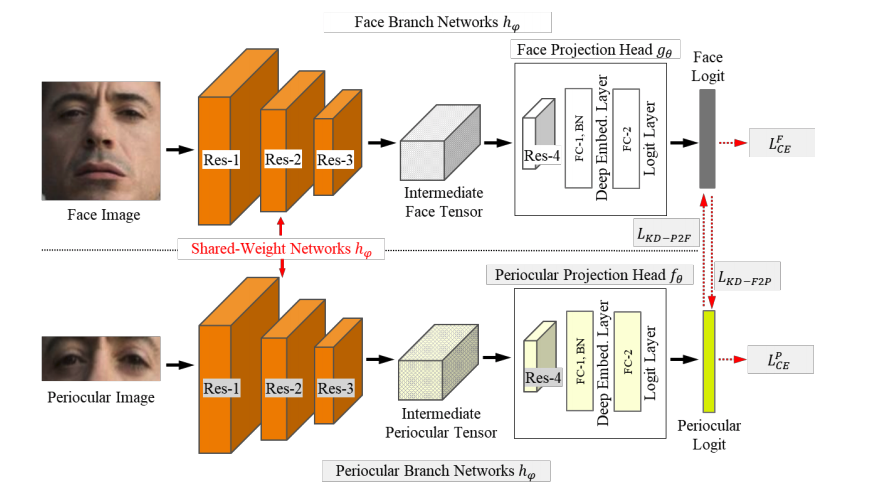
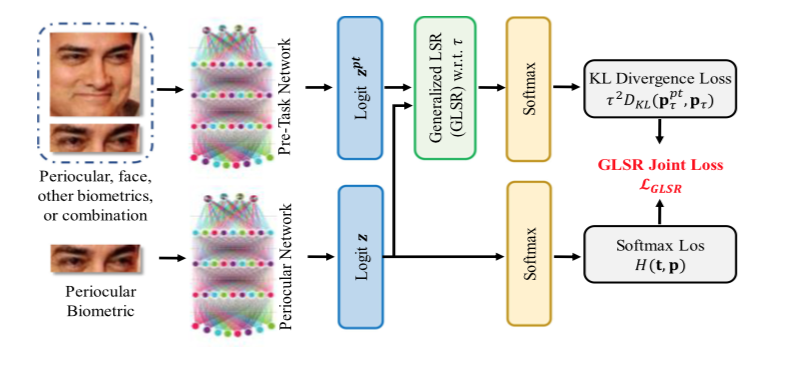
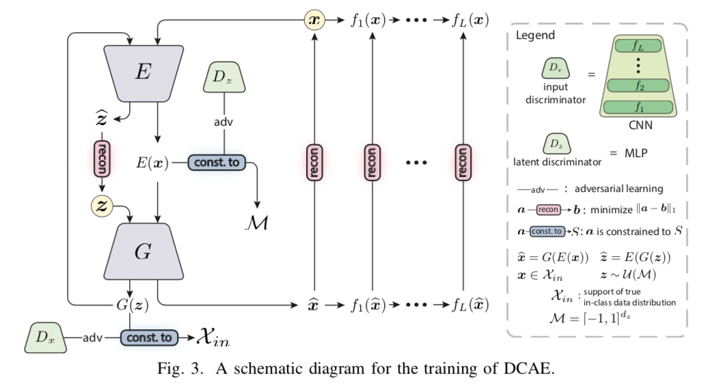
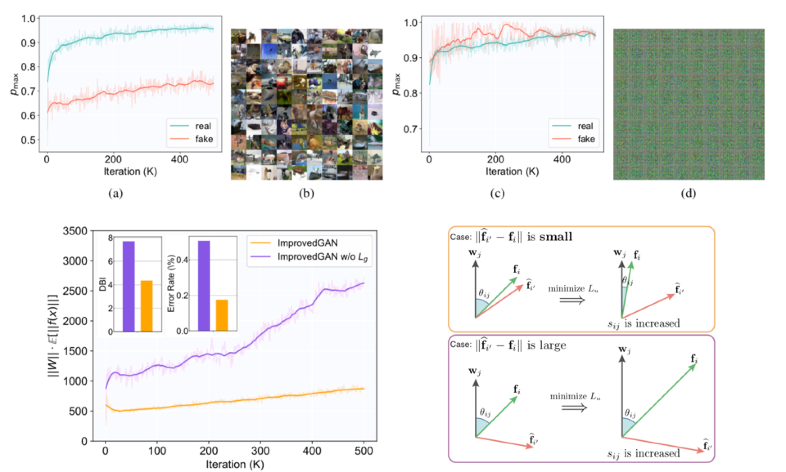
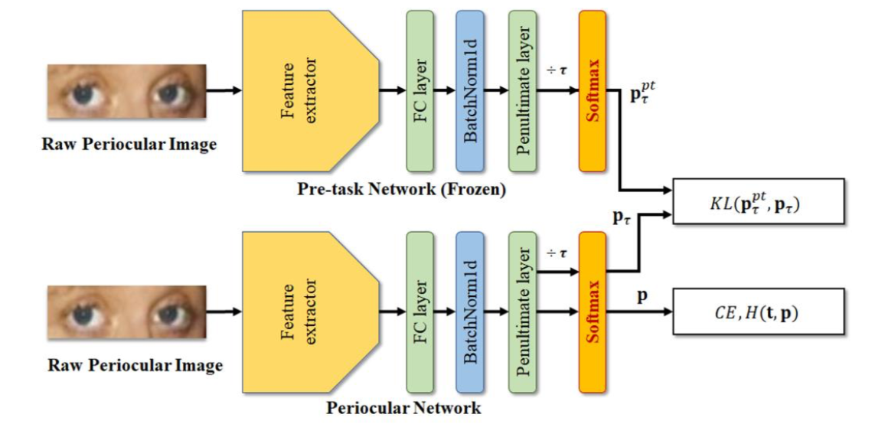

Journal
2020
|

|
Periocular in the Wild Embedding Learning with Cross-Modal Consistent Knowledge Distillation
Yoon Gyo Jung, Jaewoo Park, Cheng Yaw Low, Leslie Ching Ow Tiong, Andrew Beng Jin Teoh (Submitted) |
|

|
Periocular Recognition in the Wild With Generalized Label Smoothing Regularization
Yoon Gyo Jung, Cheng Yaw Low, Jaewoo Park, and Andrew Beng Jin Teoh. IEEE Signal Processing Letters 27 (2020): 1455-1459. |
Conference
2020
|

|
Discriminative Multi-level Reconstruction under Compact Latent Space for One-Class Novelty Detection.
Park, Jaewoo,Yoon Gyo Jung, and Andrew Beng Jin Teoh 2020 25th International Conference on Pattern Recognition (ICPR 2020).(oral) |
|

|
Revisiting ImprovedGAN with Metric Learning for Semi-Supervised Learning.
Park, Jaewoo,Yoon Gyo Jung, and Andrew Beng Jin Teoh 2020 25th International Conference on Pattern Recognition (ICPR 2020). |
|

|
Periocular Recognition in the Wild with Learned Label Smoothing Regularization.
Jung, Yoon Gyo, Jaewoo Park, Leslie Ching Ow Tiong, and Andrew Beng Jin Teoh In Twelfth International Conference on Digital Image Processing (ICDIP 2020), vol. 11519, p. 115190T. International Society for Optics and Photonics, 2020. |